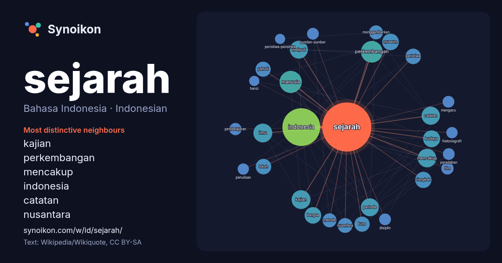

Bahasa Indonesia · Indonesian · popular word
sejarah
“history” · The words found around it in 1230 instances from Indonesian Wikipedia, Wikiquote.

Most distinctive neighbours
- kajian 26×
- perkembangan 19×
- mencakup 18×
- indonesia 16×
- catatan 16×
- nusantara 15×
- meliputi 14×
- hlm 13×
- ilmu 12×
- museum 12×
- periode 12×
- yahudi 12×
- historiografi 12×
- bangsa 11×
- sumber-sumber 11×
- disiplin 11×
- pembelajaran 11×
- peristiwa 11×
- kuno 11×
- manusia 11×
× = how many times more often than in general Indonesian Wikipedia text.
Most frequent neighbours
- indonesia 124
- manusia 43
- perkembangan 41
- dunia 31
- ilmu 31
- kajian 31
- mencakup 30
- negara 30
- bahasa 29
- catatan 29
- memiliki 29
- orang 29
- meliputi 28
- periode 28
- budaya 25
- bangsa 24
- museum 24
- tiongkok 23
- bidang 22
- dikenal 22
In context
- Sejarah adalah kajian sistematis mengenai masa lalu, dengan fokus utama pada masa lalu umat manusia. Sebagai sebuah disiplin akademik, sejarah menganalisis Wikipedia snippets · Sejarah
- Sejarah Indonesia meliputi suatu rentang waktu yang sangat panjang yang dimulai sejak zaman prasejarah berdasarkan penemuan "Manusia Jawa" yang berusia Wikipedia snippets · Sejarah Indonesia
- dalam bahasa Indonesia. 5.037 penyunting aktif. Biografi Geografi Ilmu Sejarah Kimia Teknologi Komunitas Seni Semua portal Penumpasan Pengkhianatan G30S/PKI Wikipedia snippets · Halaman Utama
- beragama Kristen Protestan kedua dalam sejarah setelah Widodo Budidarmo (1974–1978), dan Kapolri termuda kedua dalam sejarah saat dilantik (51 tahun, 267 hari) Wikipedia snippets · Listyo Sigit Prabowo
- Sejarah Tiongkok adalah salah satu sejarah kebudayaan tertua di dunia. Dari penemuan arkeologi dan antropologi, daerah Tiongkok telah didiami oleh manusia Wikipedia snippets · Sejarah Tiongkok
- Sejarah kontemporer, dalam historiografi berbahasa Inggris, adalah bagian dari sejarah modern yang menggambarkan periode sejarah dari sekitar tahun 1945 Wikipedia snippets · Sejarah kontemporer
- kemudian berkembang menjadi Pekanbaru, yang kini menjadi ibu kota provinsi. Sejarah Riau pada masa pra-kolonial didominasi beberapa kerajaan otonom yang menguasai Wikipedia snippets · Riau
- Sejarah komputer berawal dari abad ke-19, ketika Charles Babbage mencoba untuk mendesain komputer mekanik yang bernama Mesin Analitikal. Desain ini menjadi Wikipedia snippets · Sejarah komputer
More Indonesian words
- air
- anjing
- bahasa
- emas
- iklim
- jantung
- jembatan
- kebenaran
- kehidupan
- kekuasaan
- keluarga
- kematian
- kereta
- kerja
- kesehatan
- kesenian
- kucing
- lingkungan
- makanan
- sains
- tuhan
- uang
Precomputed on 2026-10-09 with default settings (±5 words, medium corpus). The interactive map can refresh it with live data.